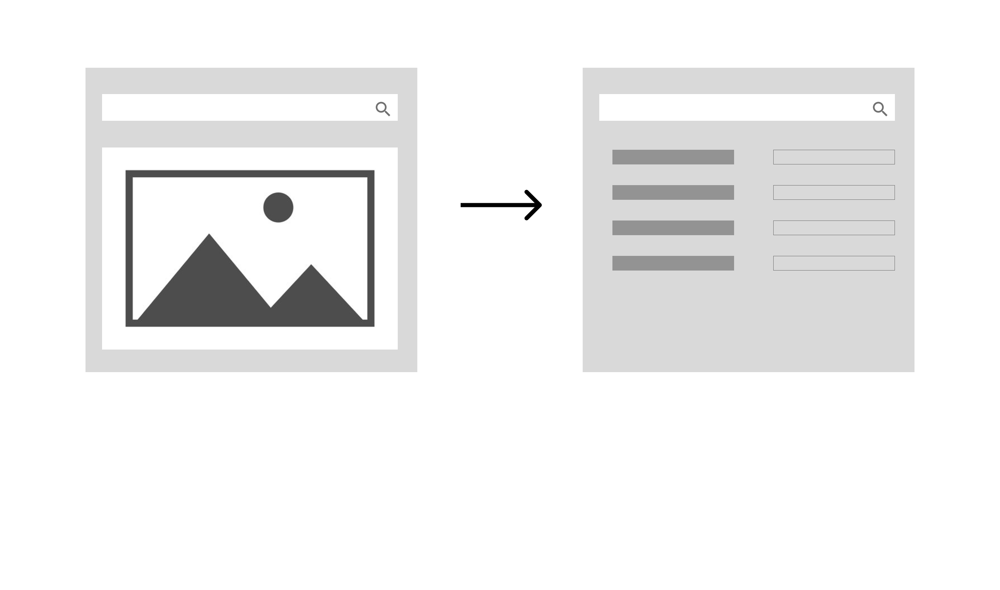

Wix New Domain Tool
Context
A Live Revenue Tool, One Month to Fix It
Through the Wix domain tool, visitors search for available domain names, purchase them, and connect them to a Wix site or anywhere else. It was already generating revenue - but leaving significant conversion on the table.
Timeline: 1 month. Status: shipped and live, with measured impact from a controlled test.
The Problem
A Tool That Wasn't Keeping Up
The domain tool was generating revenue but leaving significant conversion on the table. Three compounding issues were holding it back.
Conversion & drop-off
Search results were displayed inline on the same page in collapsed mode, creating a cluttered, hard-to-navigate experience that pushed users away before they committed to a purchase.
Bugs & security gaps
Accumulated technical debt had introduced multiple bugs. A recent security incident added urgency - the redesign had to include a new security layer without disrupting the journey.
Below competitive standard
Competitors displayed pricing upfront, offered prominent domain suggestions, and dedicated full pages to search results. Wix did none of these - a gap costing market share.
Design Decisions
4 Changes That Moved the Needle
Not every call was obvious. Each decision had a real internal debate behind it - here's the question, what the data showed, and what shipped.
Dedicated search results page
Results were collapsed inline, pushing the hero down.
Give results their own page.
view big
Spotlight on suggestions
If the exact domain was taken, most users just stopped searching.
Suggestions now sit front and center, pushing people to explore instead of giving up.
view big
Alternatives, even when available
Previously, an available domain was shown alone. Would alternatives just add doubt?
Always show alternatives, framed as "also consider."
view big
Prices upfront
Prices were hidden to survive comparison. That was becoming a liability.
Show prices inline - transparency builds more trust than it costs.
view big
Final Design
The Redesigned Experience
The full flow - from domain search to results - as shipped.
Validation
A 16-Day A/B Test
A controlled test comparing the original experience (Version A) against the redesigned flow (Version B) across a live sample of users.
Original experience
Search results appear collapsed inline on the landing page. No upfront pricing. No prominent domain suggestions. Single result focus.

Redesigned experience
Dedicated results page with prominent suggestions, alternatives surfaced even when the primary domain is available, and prices shown upfront throughout.
Every primary metric moved in the same direction. We shipped Version B.
The Impact
Results 3 Months After Launch
Version B shipped to 100% of traffic after the test. The lift held - and grew - once measured against three full months in production.
Purchase metrics
Top-funnel metrics
Initial lift confirmed in a 16-day controlled A/B test; results tracked and held through the first 3 months in production.